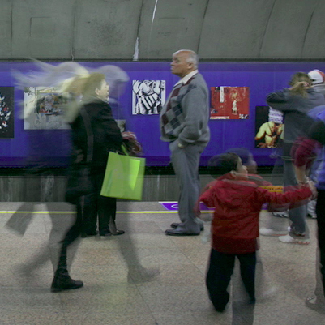
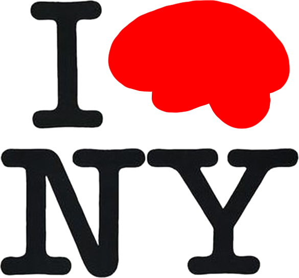
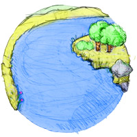

people doing strange things with electricity
The 28.0855th dorkbot-nyc meeting took place at 7pm on Wednesday, December 2nd, 2009 at Location One in SoHo.
The meeting was free and open to the public. People brought snacks to share. YUMM.
It featured the lustrous and crystalline:

Cynthia Lawson Jaramillo: The Moments Between Still & Moving
Photography is traditionally considered a medium that pauses time. In her recent artwork, Lawson Jaramillo positions photography as a media art by developing bodies of work that use it to extend and challenge our traditional notions of space and time. At dorkbot-nyc she will present her digitally and physically layered photographs and will focus on her recent experiments with extremely slow moving videos and coded generative image-based works.
http://www.cynthialawson.com
Arno Klein: Brain Labeling
I will present examples of how and why people label brain images, from painstaking, manual labeling of human brain MRI data to fully automated labeling algorithms. I will also give a preview of a new NIH-funded project that will manually label 1,000 brain images and borrow a strategy from face recognition to serve as the brains underlying a new fully automated brain labeling software program called Mindboggle.
http://www.binarybottle.com
David Birchfield: Gamebot
In the GameBot exhibition at the Arizona Science Center, humans and robots to come together for interactive game-play that explores the social, technological, and sustainability dimensions of robotics. Teams of artists, game-designers and scientists from Arizona and beyond have collaborated to create three new GameBot pieces that were unveiled at the exhibition.
http://ame2.asu.edu/projects/emlearning/projects/gamebot
Next meeting: 06 January 2010 (!?!)